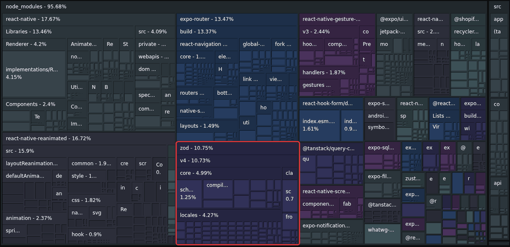

React Native & Expo · Part 3 · Session 22 of 26 · 3 hours
Session 22
Performance, Debugging and App Config
Turn "slow" and "broken" into numbers and facts, then give the app its own label.
Today
Today: two lessons, both in the terminal
| 0:00 | Warm-up: screen tests |
| 0:10 | 8.4 Performance and Debugging: model, demo |
| 0:40 | 8.4 Lab, then Step 5: the vanished cleanup |
| 1:20 | Break (10 min) |
| 1:30 | 9.1 App Config and Environments: model, demo |
| 2:00 | 9.1 Lab, then Steps 1 to 3 |
| 2:50 | Exit ticket, homework, what to bring |
LABS Labs in
labs/module-22. Work in starter/, never the solution.Warm-up · 6 minutes
Lesson 8.3, from memory
- Where does a screen test import
userEventfrom? - A cleanup appears after the API answers:
getByTextorfindByText? - One thing a Maestro flow on a phone checks that Jest cannot
WHY No notes. Then compare with a neighbor.
8.4
Performance and Debugging
Measure, then fix.
8.4 · Mental model
The tide gauge before the seawall
- Read the gauge for a season, then build where the water comes over
- Optimizing without a measurement = seawalls by feel
- Measure, change one thing, measure again
- Count renders anywhere; judge speed on a real phone
NUMBERS Compiler on: about 46 to 62 components per keystroke. Off: 262 to 531. Same result.
8.4 · The toolbox
j with only the web preview
npx expo start
› Using Expo Go › Press j │ open debugger › Press r │ reload app › Press m │ toggle menu › shift+m │ more tools Logs for your project will appear below. Press Ctrl+C to exit. Debug: No compatible apps connected, React Native DevTools can only be used with Hermes. Learn more: https://docs.expo.dev/guides/using-hermes/
WHY DevTools needs an app running Hermes: Expo Go on a phone. Web preview: the browser's DevTools.
8.4 · Two threads
Two frame rates
- JS thread (Hermes)
- components, hooks, handlers
- slow: late taps, blank rows
- UI thread (native)
- layout, drawing, scrolling, worklets
- slow: stuttering scroll
RULE 16.7 ms per frame at 60 Hz. The performance monitor (Shift+M) shows both, on a phone.
8.4 · Why a screen renders
Four reasons, one compiler
- Its state changes
- Its parent renders and passes a new element
- A context it reads changes
- A subscription reports a change: Query, Zustand, useWindowDimensions
- The React Compiler remembers results;
memoonly where measured
WHY React DevTools marks compiled components
Memo ✨: ConnectionCheck and ShareLogbook are skipped, and it does not matter.8.4 · What the app carries
The Android bundle, before
npx expo export --platform android
React Compiler enabled Android Bundled …ms node_modules/expo-router/entry.js (2238 modules) › android bundles (1): _expo/static/js/android/entry-….hbc (5.9MB)
WHY Most of it is libraries. Shoreline Crew's own src: 140 KB of the minified JavaScript.
8.4 · Expo Atlas
Where the bytes are

8.4 · Before removing
Who depends on them?
npm ls expo-glass-effect expo-device expo-web-browser @expo/ui
shoreline-crew@1.0.0 ~/shoreline/shoreline-crew ├── @expo/ui@58.0.28 ├── expo-device@58.0.5 ├── expo-glass-effect@58.0.5 ├─┬ expo-router@58.0.31 │ ├── @expo/ui@58.0.28 deduped │ └── expo-glass-effect@58.0.5 deduped └── expo-web-browser@58.0.8
WHY expo-glass-effect stays (Expo Router needs it); the other three go.
8.4 · Step 4
Zod's languages, resolved to nothing
shoreline-crew/metro.config.js
const zodLanguages = /[\\/]zod[\\/]v4[\\/]locales[\\/]index\.js$/; config.resolver.resolveRequest = (context, moduleName, platform) => { const resolution = context.resolveRequest(context, moduleName, platform); if (resolution.type === 'sourceFile' && zodLanguages.test(resolution.filePath)) { return { type: 'empty' }; } return resolution; };
WHY Metro asks its own resolver first; only Zod's list of languages becomes an empty module.
8.4 · After
2238 → 2084 modules
npx expo export --platform android --clear npx expo export --platform ios
React Compiler enabled Android Bundled …ms node_modules/expo-router/entry.js (2084 modules) › android bundles (1): _expo/static/js/android/entry-….hbc (5.5MB) _expo/static/js/ios/entry-….hbc (5.4MB)
WHY iOS did not change when @expo/ui went: Expo Router loads it on Android only. Measure each platform.
8.4 · Common mistake
Removing a package your code still imports
npx tsc --noEmit
src/components/Toolbar.tsx:1:22 - error TS2307: Cannot find module '@expo/ui/jetpack-compose' or its corresponding type declarations.
1 import { Host } from '@expo/ui/jetpack-compose';
~~~~~~~~~~~~~~~~~~~~~~~~~~
Found 1 error in src/components/Toolbar.tsx:1
WATCH Search src and run
npm ls first.8.4 · The method
Five steps, in order
- Reproduce it: a failing test is the best reproduction
- Read the error: all of it, the stack from the top
- Narrow it down: API → cache → the screen's logic
- Fix one thing
- Keep a test that fails without the fix
REPORT "I checked in, and my cleanup vanished from My cleanups."
8.4 · Step 5 · Read the error
The test file cannot even load
npm test -- --watchAll=false src/test/screens/my-cleanups.test.tsx
FAIL src/test/screens/my-cleanups.test.tsx
● Test suite failed to run
TypeError: handleSubscription.remove is not a function
Test Suites: 1 failed, 1 total
Tests: 0 total
WHY Bottom-up, the stack is the import chain: test → screen → mutations → reminders → expo-notifications.
8.4 · Step 5 · A stand-in, then
The failure that matches the report
jest.mock('@/notifications/reminders', () => ({ updateReminders: jest.fn() }));
FAIL src/test/screens/my-cleanups.test.tsx ✓ lists the cleanups Theo signed up for, each with a Cancel button ✕ keeps today's cleanup after check-in, marked Checked in, with nothing to cancel ● keeps today's cleanup after check-in, marked Checked in, with nothing to cancel Unable to find an element with text: Tide Pool Morning Cleanup Tests: 1 failed, 1 passed, 2 total
WHY With a factory: an automatic mock would load the real module.
8.4 · Step 5 · Fix one thing
What My cleanups keeps
shoreline-crew/src/app/(tabs)/my-cleanups.tsx
const comingUp = signups.data .filter( ({ status, event }) => ((status === 'confirmed' || status === 'waitlisted') && event.date >= today) || (status === 'attended' && event.date === today), ) .reverse();
WHY The API still had the sign-up (attended): the bug was in what the screen keeps.
8.4 · Step 5 · Keep the test
Failed without the fix, passes with it
npm test -- --watchAll=false src/test/screens/my-cleanups.test.tsx
PASS src/test/screens/my-cleanups.test.tsx ✓ lists the cleanups Theo signed up for, each with a Cancel button ✓ keeps today's cleanup after check-in, marked Checked in, with nothing to cancel Tests: 2 passed, 2 total
WHY That is how you know it is a test of THIS bug. 47 tests in all.
8.4 · Project
The bug fixed

8.4 · Guided lab · 20 minutes
The method, on a new screen
labs/module-22/l8_4-performance-and-debugging/starter- Task 1: a test file that cannot load: read the stack, add a stand-in
- Task 2: "I typed cove and nothing came up": the test FIRST
- Task 3 (home): a listener that outlives its screen
- Done:
Tests: 4 passed, 4 totalfor the search file
NEXT Then Step 5 of the lesson project on your own copy.
9.1
App Config and Environments
One project, three apps.
9.1 · Mental model
The field kit's label
- The config is the label on the bag: name, ids, icon, permissions
- Expo Go is a borrowed bag with Expo's label
- It runs in Node on your computer, never on the phone
- The public part travels inside every build
npx expo config: ask Expo what it sees
MODEL Three bags, one label maker: APP_VARIANT.
9.1 · Step 2
Three variants, one type guard
shoreline-crew/app.config.ts
const variants = { development: { name: 'Shoreline Dev', appId: 'com.example.shorelinecrew.dev' }, preview: { name: 'Shoreline Preview', appId: 'com.example.shorelinecrew.preview' }, production: { name: 'Shoreline Crew', appId: 'com.example.shorelinecrew' }, }; type Variant = keyof typeof variants; function isVariant(value: string): value is Variant { return Object.hasOwn(variants, value); }
WHY Then
process.env.APP_VARIANT ?? 'development' and a throw for any other name.9.1 · Step 3
Three variants of one app
npx expo config --type public APP_VARIANT=preview npx expo config --type public
name: 'Shoreline Dev', usesCleartextTraffic: false bundleIdentifier: 'com.example.shorelinecrew.dev' package: 'com.example.shorelinecrew.dev', name: 'Shoreline Preview', usesCleartextTraffic: true bundleIdentifier: 'com.example.shorelinecrew.preview' package: 'com.example.shorelinecrew.preview',
WHY Different ids: all three fit on one phone.
9.1 · Step 3
A misspelled variant
APP_VARIANT=prod npx expo config --type public
env: load .env.local
env: export EXPO_PUBLIC_API_URL
Error: Error reading Expo config at ~/shoreline/shoreline-crew/app.config.ts:
APP_VARIANT must be development, preview or production, not "prod".
Error: APP_VARIANT must be development, preview or production, not "prod".
at Object.<anonymous> (~/shoreline/shoreline-crew/app.config.js:15:11)
WATCH Your own message, before anything is built. app.config.js = your TypeScript, compiled.
9.1 · Step 4
No plain http in production
APP_VARIANT=production npx expo config --type public
env: load .env.local
env: export EXPO_PUBLIC_API_URL
Error: Error reading Expo config at ~/shoreline/shoreline-crew/app.config.ts:
A production build needs an https:// EXPO_PUBLIC_API_URL, not "http://localhost:4000".
Error: A production build needs an https:// EXPO_PUBLIC_API_URL, not "http://localhost:4000".
at Object.<anonymous> (~/shoreline/shoreline-crew/app.config.js:21:11)
WHY Release builds refuse http. With
EXPO_PUBLIC_API_URL=https://... in the shell it passes.9.1 · Settings
Where each setting lives
EXPO_PUBLIC_API_URL: in the bundle, not secretAPP_VARIANT: the shell or the build profile
ANDROID_GOOGLE_MAPS_API_KEY: .env.local or build secrets- Ships in the app: restrict it in Google Cloud
SECRETS A shell variable beats .env.local. A key in a committed file: replace the key.
9.1 · Common mistake
A misspelled key
npx tsc --noEmit
app.config.ts:44:5 - error TS2561: Object literal may only specify known properties, but 'bundleIdentifer' does not exist in type 'IOS'. Did you mean to write 'bundleIdentifier'?
44 bundleIdentifer: variants[variant].appId,
~~~~~~~~~~~~~~~
WHY app.json would ignore it without a word. Run tsc after every config change.
9.1 · Step 6
What a build would ask the phone for
APP_VARIANT=preview npx expo config --type introspect
CFBundleDisplayName: 'Shoreline Preview',
NSCameraUsageDescription: 'Shoreline Crew uses your camera to photograph the debris you collected at a cleanup.',
NSLocationWhenInUseUsageDescription: "Shoreline Crew uses your location to show how far you are from a cleanup's meeting point.",
entitlements: {},
package: 'com.example.shorelinecrew.preview'
'android:usesCleartextTraffic': 'true',
'android:name': 'com.google.firebase.messaging.default_notification_icon',
'android:resource': '@drawable/notification_icon'
WHY No Face ID sentence, no push entitlement. Expo Go shows none of it: Lesson 9.2's build does.
9.1 · Step 7
Which build is this?

9.1 · Guided lab · 25 minutes
Shoreline Lookout's app config
labs/module-22/l9_1-app-config-and-environments/starter- Task 1: the key tsc names, three variants,
developmentby default - Task 2: the https guard,
shorelinelookout-devfor development - Task 3: the Maps key from
process.env - Done:
Tests: 6 passed, 6 total, tsc and lint silent
NEXT Then Steps 1 to 3 of the lesson project.
Wrap-up · 4 minutes
Exit ticket
- The five steps of the debugging method, in order
- One thing the bundle carried for nothing, and how you found it
npx expo start, no APP_VARIANT: which name, which id, why?
WHY No notes. Workbook Exit Ticket box or a sticky note on the way out.
Before Session 23
Homework and bring list
- 8.4: Steps 1 to 4 and 6, your performance numbers
- 9.1: Steps 4 to 7, expo-doctor 20/20, 48 tests, a commit with no key
- Exercises, both quizzes, both journals, the labs' Task 3
- Optional: a free Expo account for Lesson 9.2 (never needed to pass)
NEXT Session 23: Development Builds and EAS Build.